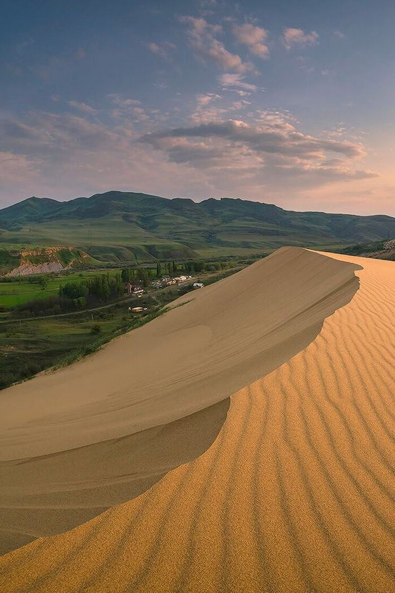

экскурсия
Сулакский каньон
И БАРХАН САРЫКУМ
1 ДЕНЬ. Увидьте самый глубокий каньон Европы, промчитесь по бирюзовой воде на катерах и прогуляйтесь по пустыне Сарыкум.
записатьсяпрограмма экскурсии
Насыщенный день по лучшим локациям
Сбор группы в Махачкале
Старт от пр. Акушинского, 5-я линия. По пути забираем туристов из Каспийска и Избербаша
Бархан Сарыкум, Чиркейское водохранилище
Прогулка по экотропе среди золотых дюн — лёгкая разминка перед каньоном. Останавливаемся на смотровой над «дагестанским морем» и Чиркейской ГЭС.
Скоростной катер, Обед в «Главрыбе»
Прогулка по каньону или по водохранилищу — на выбор. Лучший момент дня. Форель на углях, чуду и виды на форелевые пруды у самой воды.
Пещера Нохъо и мост, Дубки
Подвесной мост над пропастью; для желающих — зиплайн и тарзанка. Та самая открыточная панорама на бирюзовый Сулак с высоты ~1900 м.
Возвращение в Махачкалу
Заезд по точкам высадки. Спокойная дорога с комментариями гида.
об экскурсии
Самые яркие впечатления региона
Каньон и катера
Бирюзовая вода, мощные скалы и динамичная прогулка на катерах по одной из главных локаций республики.
Сарыкум и форель
Прогулка по бархану Сарыкум и та самая знаменитая форель на углях.
От 4 300p
Стоимость указана за человека.
что входит
Всё нужное для удобной экскурсии
Транспорт по маршруту
Переезды между основными точками экскурсии в течение дня.
Организация маршрута
Продуманная логистика и комфортная последовательность остановок.
Топ-локации
Самые яркие точки экскурсии без лишней суеты.
Дневной формат
Насыщенная однодневная программа, удобная для короткой поездки.
что вас ждёт
Лучшие локации маршрута

Сулакский каньон
Глубочайший каньон мира с бирюзовой рекой. Вид сверху на отвесные скалы просто завораживает дух.

Бархан Сарыкум
Настоящая пустыня среди гор с золотыми дюнами. Здесь снимали культовое «Белое солнце пустыни».

Чиркейское водохранилище
«Дагестанское море» — живописная смотровая над бирюзовой водой у подножия Чиркейской ГЭС.

Пещера Нохъо и подвесной мост
Подвесной мост над пропастью и панорама на бирюзовый Сулак с высоты 1900 метров.
Хотите поехать на эту экскурсию?
Оставьте заявку или напишите нам в мессенджер — подскажем по датам, трансферу и свободным местам.